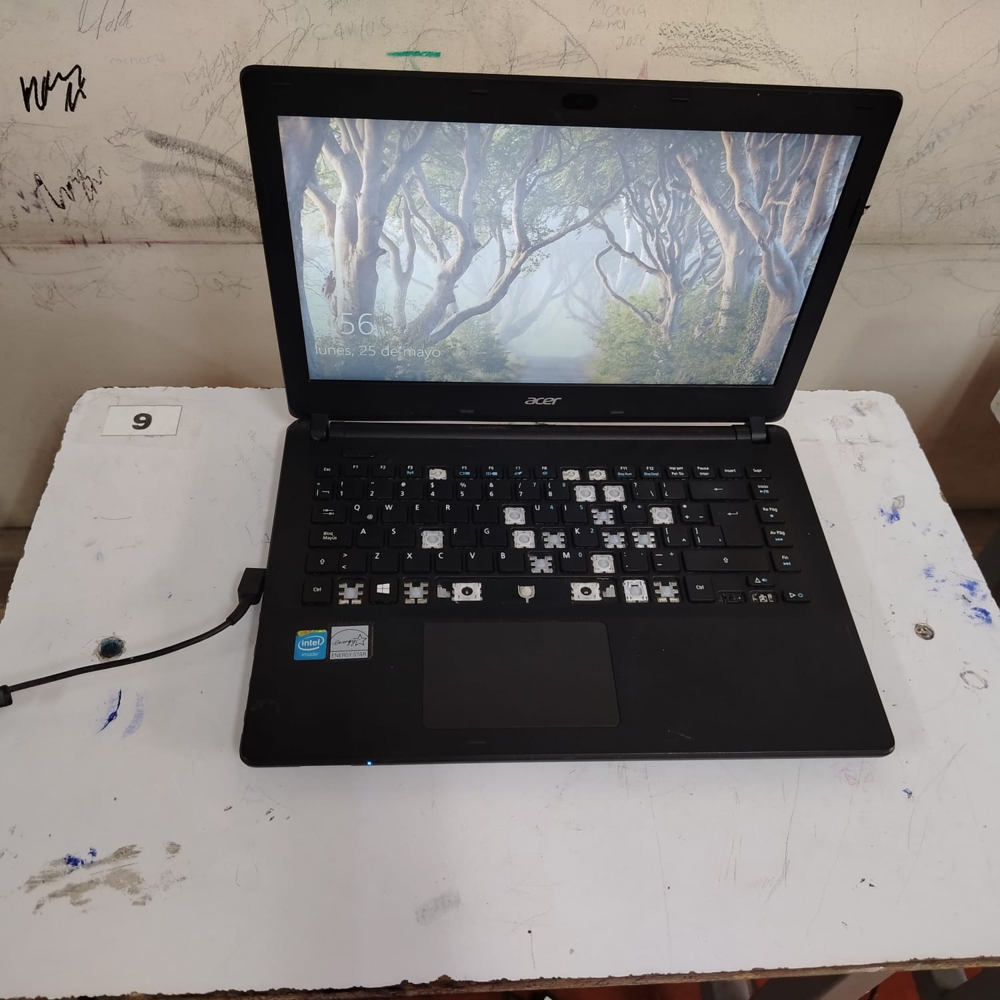
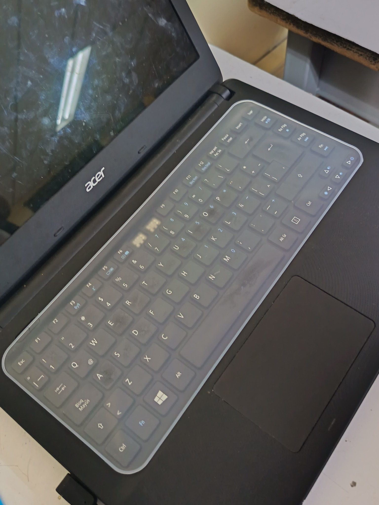
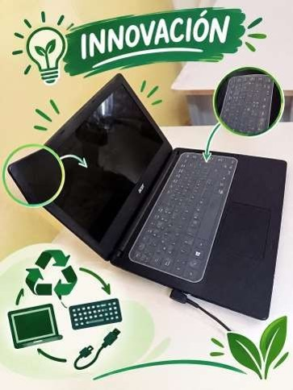

Mantenimiento y restauración de la sala de informática (Sala 21) de la Institución Educativa Eustaquio Palacios.
La sala de informática (21) de la institución educativa E.P. presenta varios equipos con bajo rendimiento, teclados dañados (teclas faltantes), componentes deteriorados y fallas que dificultan su funcionamiento. Esta situación afecta el desarrollo de las actividades académicas y hace necesario realizar mantenimiento y restauración mediante la reutilización de componentes en buen estado.

Implementar un proyecto de mantenimiento y restauración de los equipos de la sala de informática de la institución educativa mediante el diagnóstico, reparación y reutilización de componentes provenientes de computadores que han finalizado su vida útil, con el propósito de optimizar el funcionamiento de los equipos, reducir costos, prolongar su vida útil y promover el uso responsable de los recursos tecnológicos y el cuidado del medio ambiente.
Consiste en restaurar y dar mantenimiento a los equipos de la sala de informática mediante la reutilización de componentes de computadores fuera de servicio. Su función es diagnosticar, reparar y restaurar los equipos; su utilidad es recuperar computadores y reducir costos; y sus beneficios son mejorar el rendimiento de los equipos, prolongar su vida útil y disminuir los residuos electrónicos.

Evaluación de equipos Acer (Computadores para Educar / MinTIC / MinEducación) con teclados averiados y bloqueos.
Intervención técnica en equipos identificados (Unidades 4, 11, 12, 17, 20, 22), cotizaciones y presupuesto.

Entrega satisfactoria de los equipos restaurados a la Institución Educativa y conclusiones del proyecto.